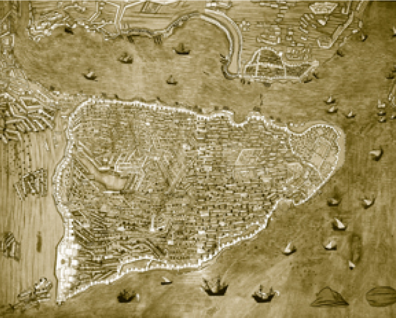

PADİŞAHIN EVİ OLARAK SARAY
Topkapı Sarayı, Osmanlı sultanlarının ikametgâhıdır. İstanbul fatihi II. Mehmed tarafından 1460’ta yaptırılmış ve bazı ilavelerle 19. yüzyıl ortalarına kadar Osmanlı padişahları ve saray halkı burada ikamet etmiştir. 19. yüzyılın devlet protokolü ve merasimleri dolayısıyla saray yetersiz kalmış ve 1830’lardan itibaren Sultan II. Mahmud oğlu Sultan Abdülmecid Han burada pek ikamet etmemiş ve 1850’lerin başında Türk sultanları Boğaz’daki Dolmabahçe Sarayı’na taşınmışlardır. Saray terk edildikten sonra da saltanat hazinesi, Mukaddes Emanetler ve imparatorluk arşivleri burada muhafaza edilmiştir. Bir baba ocağı olması ve Mukaddes Emanetler’i barındırmasından dolayı saray, protokolünü muhafaza etmiştir. Osmanlı monarşisi 1922’de kaldırıldıktan sonra da 1924’ten itibaren müze olarak ziyarete açıktır. Sarayımızın bilhassa on iki bin adet Çin porseleni ve dokuz yüz adet Japon porseleni önemli koleksiyonlarındandır. Bundan başka eşsiz 16. ve 17. yüzyıl Türk kumaş koleksiyonları, halılar, silah koleksiyonları, Avrupa porselenleri de müzemizin zengin bölümleridir.
Topkapı Sarayı’nın yazma eserler kütüphanesi, on sekiz binden fazla el yazması kitaba sahiptir. Bunlar sadece Arapça, Farsça ve Türkçe değil, aynı zamanda Slav dillerinde, Yunanca, Ermenice, Latince ve hatta “Corviniana” örneğinde olduğu gibi Macarca nüshalardır.
Sarayın kurucusu Sultan II. Mehmed’in yaşadığı bölüm, hazine dairesine çevrilmiştir. Hazinede; Osmanlı tahtının yanı başında İran’dan gelen hediye bir taht, Babürlüler devri Hindistan’ından gelen muhtelif hediyeler, Bizans’tan kalma bir mukaddes emanet (sacre relique), sayısız mücevher ve ünlü Kaşıkçı Elması gibi nadide parçalar da yer almaktadır.
Osmanlı Sarayı’nın en ilginç bölümlerinden bir tanesi mutfaklardır. Mutfaklara restorasyonla yeni bir düzen getirilmiştir. Yine sarayın Araba Dairesi’nden çıkarılan bazı saltanat arabalarını da burada görmek mümkündür. Sarayın en yüksek noktası ise, Adalet Kulesi dediğimiz Osmanlı Divan-ı Hümâyûn’u yani Imperial Consul’un toplandığı yerdir. Bu binaların çevrelediği orta avluda yeniçeriler üç ayda bir büyük bir törenle maaşlarını alır, yabancı devlet sefirleri de bunları seyrederdi.
Sarayın iç kısmı yani padişahın ikametgâhı sayılan Harem ve Enderun, tarihi yönlendiren bölümlerdir. Enderun, devşirme (recruit) çocukların devlet idaresi ve ordu komutası için yetiştirildiği bölümdür. Burada hem teorik dersler alırlar, hem de saray hizmetlerinde bulunurlardı. Hizmet eden, hizmet ettirmeyi bilir. 15-16 yaşında saraya giren, ihtimal üzere 25-30 yaşlarında general rütbesiyle çıkardı. Enderun dediğimiz bu avluda ve koğuşlarda sert bir disiplin vardı. Bugünkü ziyaretçileri hayran bırakan Kumaş Seksiyonu, İmparatorluk Hazinesi ve Kutsal Emanetler bu avludadır. Kutsal Emanetler Bölümü her zaman Müslüman dünyanın ama başka din mensuplarının da ziyaret ettiği, Hazreti Peygamber’e ve diğer büyük peygamberlere ait eşyaların saklandığı bölümdür.
Harem, özellikle savaşlarda esir edilen, satın alınan genç kızların eğitildiği bir bölümdü. Okuma yazma, iyi giyim, musiki öğrenen bu genç kızların kuşkusuz ki hepsi padişaha iş ve tecviz edilmiş değildir. İmparatorluğun diğer yönetici kumandan sınıfları da buradan evlenirlerdi. Mesela İstanbul ve Bursa gibi şehirlerin hemen her mahallesinde saraydan çıkıp o yörenin belli başlı bir efendisiyle evlenen bir hanım bulunurdu. Sarayın etiketi böyle yayılırdı. Harem bölümü çinileri ve nefis Osmanlı kaligrafisinin en seçkin örnekleriyle ünlüdür.
Osmanlı Sarayı’nda en önemli bölümlerden biri de sarayın arşividir. Osmanlı Devleti’yle ve bu büyük devletin ilişkide bulunduğu hemen bütün Avrupa ve Asya’nın hükümran (sovereign) devletleriyle ilgili vesikalar buradadır. Bu arşiv incelenmeden dünya tarihi yazılamaz.
Topkapı Sarayı mütevazıdır; askerî bir imparatorluğun büyük harcamaları daha çok muhteşem camiler, kışlalar, köprüler, kervansaraylar ve konaklama tesisleri için yapılmıştır. 16. yüzyılın ünlü mimarı Mimar Sinan bile bu sarayda sadece bir bölümü inşa etmiştir. Lakin bu mütevazı sarayın kendine özgü pandantif biçimli güzel binaları, nefis çinileri ve tabiatla iç içe geçmiş yapısı ile bulunduğu Sarayburnu; İstanbul’un neresinden bakılsa ona ihtişam verir. Bu doğal bir güzellik ve ihtişamdır. Topkapı Sarayı’nda hayat, içindeki yüzlerce hizmetli ve birkaç bin muhafız süvari (Sipahi-Altı bölük) israftan uzak, mütevazı şartlarda yaşanmıştır.
Saray mutfağında ünlü Türk mutfağının en güzel örnekleri hazırlanmıştır. Kumaşlar 16. ve 17. yüzyılın en iyi dokumalarıdır. İnsanlar yemeklerini Çin porseleninde yemelerine rağmen dar mekânda yaşarlar; mütevazı, disiplinli ve programlı bir hayat sürerlerdi. Padişahın ihtişamlı kıyafeti bile sarayın içinden çok dışını etkilemek içindi ve aslında halk çok sade giyimli bir padişahı beğenmezdi.
Osmanlı Sarayı hayatının merasimleri ayrı bir ihtişam konusuydu. Bunlar halkı olduğu kadar gelip geçen yabancıları da etkilemiştir. Her cuma padişah İstanbul camilerinden birinde ibadet etmek için muhteşem bir alayla (selamlık töreni) halkın arasına çıkardı. Kendisine sunulan dilekçeler imparatorluk halklarının muhtelif dillerindeydi. Onları okumak tarihçiler için bir zevktir.
Şehzadelerin sünnet düğünlerinde saray, halka cömertçe ikramlarda bulunur; çeşitli merasim ve gösteriler düzenlenirdi. Burada esnaf alaylarının geçit törenleri de mühimdi. Yine ordular seferden zaferle dönünce zırhlar, silahlar ve üniformalardan oluşan göz alıcı mağrur bir alay, şehrin ortasından geçerdi.
Osmanlı Sarayı şiir ve musikiydi. Musikişinas ve şairler hep ödüllendirilirdi. Her padişahın bir zanaatı vardı. III. Selim büyük kompozitördü, III. Ahmed büyük bir kaligraftı. II. Mahmud hem kaligraf hem musikişinastı. Muhteşem Süleyman kuyumcuydu. II. Abdülhamid dâhi bir marangozdu. IV. Murad sporcuydu ve gayet ince bir kaligraftı. II. Mehmed (Fatih) Rönesans tipi bir hümanistti. Yunanca okur, Farsça şiir yazardı. Doğu ve Batı’nın efendisiydi.
Saray, yüksek değil, zarif yapılardan oluşurdu. Adalet kulesi ve denizden dahi görünen harem kubbeleri hariç bütün yapılar onun avlusundaki ve etrafındaki ulu çınarlardan daha alçaktır. Sarayın büyük bir arazisi vardı. Bu arazi zamanında müthiş bostanlar ve gül bahçelerini barındırırdı. Bugün saray bahçeleri yeniden ıslah edilmeye çalışılmaktadır. Saray üzerinde tetkik ve araştırmalar artmaktadır. Ancak merhum Ord. Prof. Dr. İsmail Hakkı Uzunçarşılı’nın “Saray Teşkilatı” ve Prof. Dr. Sedat Hakkı Eldem’in İlmi Röleve çalışmaları tipinde abidevi çalışmalara ihtiyaç vardır.

Sultan III. Murad devrinde Suriçi (Hünername)